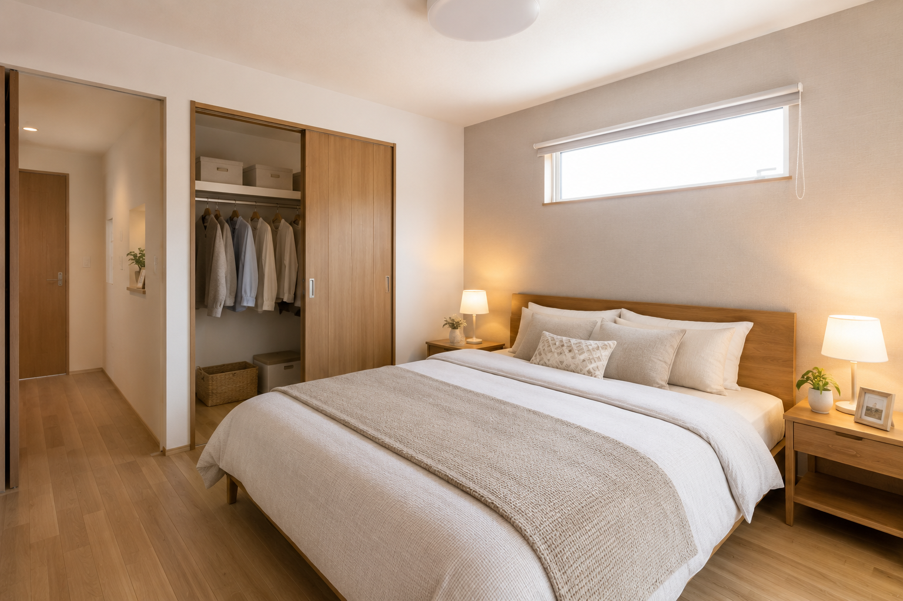
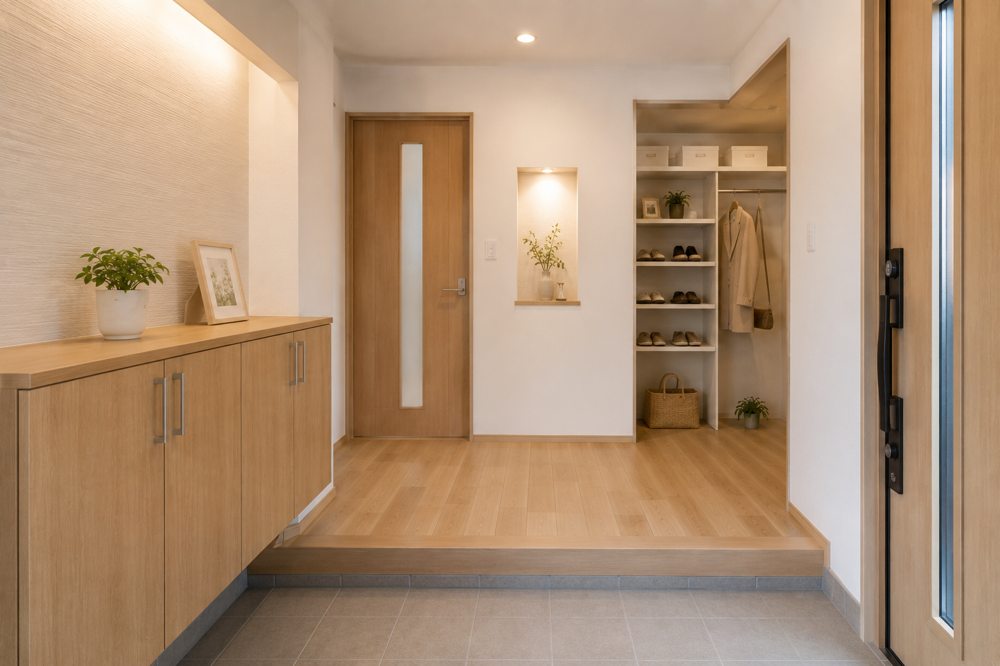

水回り
古くなった設備を一新し、毎日使いやすい清潔な空間へ整えました。 お手入れのしやすさにも配慮しています。
宮真倉リフォームがこれまでに担当した施工事例の一部をご紹介します。
住まいのお悩みに合わせて、
快適で使いやすい空間をご提案いたします。
古くなった設備を一新し、毎日使いやすい清潔な空間へ整えました。 お手入れのしやすさにも配慮しています。

家族が集まりやすい、明るく開放的なリビングへ改装しました。 自然光を活かした落ち着きのある仕上がりです。

成長に合わせて長く使えるよう、やさしい色合いと丈夫な素材で仕上げました。 収納スペースも見直しています。

静かに休める空間を目指し、壁紙や床材を落ち着いた雰囲気に変更しました。 照明計画もあわせてご提案しています。

住まいの第一印象を明るく整え、収納力と使いやすさを高めました。 来客時にも気持ちよく迎えられる玄関です。
弊社は独自の特殊素材を用いることで、どこよりも安心、安全、格安に施工いたします！